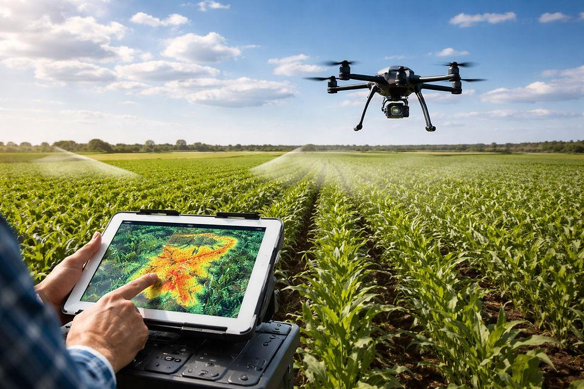

Weather services
Use reliable local forecasts to help plan planting, irrigation and harvesting.
MODERN FARMING
Simple examples of how tools and information can support farm decisions.

Technology can help farmers monitor conditions, plan work and connect with markets. The right tool depends on farm size, cost, skills and local availability.
These are general examples, not endorsements of a particular supplier.
Use reliable local forecasts to help plan planting, irrigation and harvesting.
Test soil before making major decisions about fertiliser or soil amendments.
Consider efficient irrigation and rainwater collection where suitable.